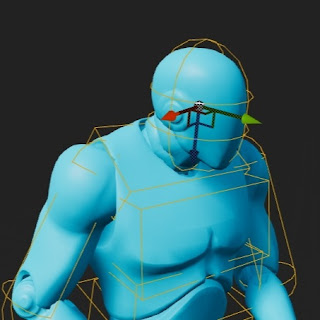

🦾 Physicanim Unity Plugin
This Unity asset package contains an active ragdoll toolkit for the Editor that allow you to convert any
humanoid character animation to physics driven animations. Convert any rigged humanoid character into an
advanced procedurally animated active rag-doll.
*A.K.A* Physicanim Character ~*.

Features
- Physicanim Active Rag-doll Builder
- Create and convert character models into Physicanim active ragdoll characters in one click!
- Basic Physicanim Character Behaviours
- Fall down, get back up.
- Physicanim Character Controller

🦿 Physicanim Character Behaviours
The Physicanim Character Behaviours class provides the active ragdoll a number of procedural behaviours to
react to the standard situations. It is able to walk, run, jump, trip, fall and then get up. While falling,
the Physicanim character tries to maintain
a protective pose. When getting back up, the movement lock to the root of the static animator is slowly
increased to transition from free falling to animation root motion control.

📝 Developer Comments
For many years I have been making games in Unity exploring ragdoll physics and procedural animation. Setting up
an active ragdoll for every project can become very tedious, so I have developed a Unity Package that will
create your active ragdoll, set
up its bones & joints and animate it in a way that is physically simulated with physics rigid body and collider
components. The package is available install through the Unity Package Manager and on the GitHub page.